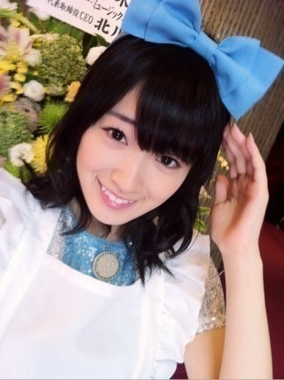
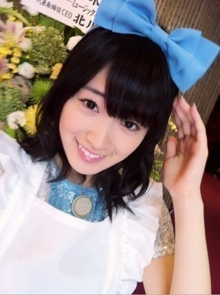

2012/0919Wed（´-`）.｡oO(かずみん×98
こんばんは(^^)
いつも応援ありがとうございます！
今週はお休みもあったので、
まったりしてました〜(´･u･)
飛鳥ブログにちょろっと
出現させていただきましたね！
thank you♪(´ε｀ )
飛鳥と写真撮る時は
あえて前に出ます！笑
なぜかというと
後ろにさがっても私の方が
顔が2倍くらいbigだから...笑
ああ、中2で出来上がってる飛鳥の
これからが楽しみです！
↑おばあちゃん目線
そんな可愛い飛鳥とろってぃーと
ひめたんと今週の全握で
同じレーンだそうです！
あしゅ、ろってぃー、ひめたん
推しの皆様、よろしくお願いします！
全握久々だなぁ...
楽しみです*^^*
--------
今日は小中高とずーっと仲良しの
友達2人と女子会ならぬ女子ランチを
しました〜(#^u^#)
楽しかった♪(´ε｀ )
私は変装があまり好きではないので
今日も普通に都内にいたのですが、
誰からも気づかれませんでした！
どや(￣▽￣)笑
オーラないから大丈夫よ〜
メイクワンシ〜
今日は帽子とバッグが欲しくて、
ぶらぶらしたのですが
あんまりいいのなかったです(｡-_-｡)
代わりに可愛いイヤリングを
買いました(*^_^*)
部屋にいるので
キャミソールですみません(>_<)
わかりずらいかな...
また今度しっかり載せますね！
本当に可愛いんですよ〜\(//∇//)\
休日はリフレッシュできました(*^-^*)
明日からまた頑張るぞ〜！
----------
最後に公演の写メを...

みなさんのおかげで
アリスができました。
本当に楽しかった。
みなさんには感謝しきれません(T ^ T)
公演は終わってしまいましたが、
これからもお仕事ガジ頑張りますので
よろしくお願いします！
それでは
お休みなさい...☆
いつも応援ありがとうございます！
今週はお休みもあったので、
まったりしてました〜(´･u･)
飛鳥ブログにちょろっと
出現させていただきましたね！
thank you♪(´ε｀ )
飛鳥と写真撮る時は
あえて前に出ます！笑
なぜかというと
後ろにさがっても私の方が
顔が2倍くらいbigだから...笑
ああ、中2で出来上がってる飛鳥の
これからが楽しみです！
↑おばあちゃん目線
そんな可愛い飛鳥とろってぃーと
ひめたんと今週の全握で
同じレーンだそうです！
あしゅ、ろってぃー、ひめたん
推しの皆様、よろしくお願いします！
全握久々だなぁ...
楽しみです*^^*
--------
今日は小中高とずーっと仲良しの
友達2人と女子会ならぬ女子ランチを
しました〜(#^u^#)
楽しかった♪(´ε｀ )
私は変装があまり好きではないので
今日も普通に都内にいたのですが、
誰からも気づかれませんでした！
どや(￣▽￣)笑
オーラないから大丈夫よ〜
メイクワンシ〜
今日は帽子とバッグが欲しくて、
ぶらぶらしたのですが
あんまりいいのなかったです(｡-_-｡)
代わりに可愛いイヤリングを
買いました(*^_^*)
部屋にいるので
キャミソールですみません(>_<)
わかりずらいかな...
また今度しっかり載せますね！
本当に可愛いんですよ〜\(//∇//)\
休日はリフレッシュできました(*^-^*)
明日からまた頑張るぞ〜！
----------
最後に公演の写メを...

みなさんのおかげで
アリスができました。
本当に楽しかった。
みなさんには感謝しきれません(T ^ T)
公演は終わってしまいましたが、
これからもお仕事ガジ頑張りますので
よろしくお願いします！
それでは
お休みなさい...☆
2012/09/19 22:42


コメント(417)
全握いけないけど遠くから応援してます＼(^o^)／
ポジティブSay！
誰にも気付かれなかったのか(^^)v
俺ならすぐ気付く自信あるわー＼(^o^)／
うん、お仕事ガジがんばってね♪
おやすみ～☆
飛鳥さんと同じくらい
若々しくみえるから
大丈夫ですっ笑
ヾ(=^▽^=)ノ
寒くないかい(((・・;)？
風邪引かないようにね(>_<)
かずみん街歩いてたら
気づく自信あるんやけどな…
とりあえず、私の回り歩いてみて←
名古屋握手いくからヽ(・∀・)ノ
かずみん久々で楽しみ( ☆∀☆)←
かずみーーーん！(*^^*)
休みは楽しめたみたいだね(*^^*)
俺は再来週実力テストだから最近は休めてない(泣)
なぬ！？
あしゅのブログにでてるだと…
見たけど←(笑)
俺も普通に都内にいけばよかったー(笑)
イヤリング可愛いね♪
似合ってるよ(^o^)/
俺が入った4日の公演はかずみんがアリスになれてよかった(*^^*)
今度からアリスって呼ぶわ(笑)
よし！俺も勉強ガジ頑張るぞ(^o^)/
仕事頑張ってね♪
それじゃあこの辺で！
今日はお疲れ様(*^^*)
明日も頑張ろう
愛羅武勇
ゆーたんなう
6レーン行きたいヾ(＠゜▽゜＠)ノ
てか名古屋行けない(汗)orz
泣きたいわ(;^_^A
気がつかない…
オーラを消すテクがかずみにはあるってことで！
久しぶりに質問たーいむ
かずみにとって心洗われる場所や風景ってどこ？
今日も1日お疲れちゃん
ぢゃぁ
(一実o^∀^o46)
↑
これ大事
女子ランチいいね！！
俺なら街中でも絶対気が付くのになー。
オフでリフレッシュできたみたいでよかったね！！
明日もふぁいてぃん！！
あと少しで握手や握手♪
しかも二日続けてとかww
オフも楽しめたみたいやね
良かった良かった(笑)
かずみんアリス可愛いわ～
こんなん言ってんのバレたらまた怒られるわ(笑)
ほなねﾉｼ
名古屋全握と大阪個別楽しみにしてるよ～♪
大阪はけっこうぐるぐるするからね！笑
誰にも気づかれないなんて...笑
なんでカナ？笑
キャミソール姿かわいいなぁ！
なんかセクシー（笑）
改めて公演お疲れ様＾＾
たくさん成長できた公演だったね！
これからもガジがんばって！
ファイティーン☆
じゃあ名古屋で～
せいや(^3^)-☆
オーラがすごすぎて話しかけられなかったんだと思うきっと！(￣ー￣)(笑)
東京公演は千秋楽夜行ったんだけどアリスかずみんも見たかったなあ〜〜〜ってのが本音です(笑)
でも何やっても素敵ですよ！:)
ピアスもいいね＼(^o^)／。
都内にいたのに
気づかれないの？
俺は絶対に
気づく自身あり！笑
オフはゆっくりできたかなあ？笑
かずみん
忙しいから
無理はしないでね笑
ちなみに
7日目に東京公演
行ったけど
かずみんは
アリスになると思った笑
人を引き込むよね
本当っ！！
うらやましう！！
これからも応援してます！！笑
明日からも
頑張りまいやん！
かずみん見つけたら、声かけよーっと(笑)
アリスホントにおめでとう！！！
少しでも自分の為の
充実した時間を
堪能できましたか？
き、きゃ、きゃみっ、そうるぅ、
キャャ、
（文字を打ち込む指がぁー震えるょ）
はい。
キャミソールかずみん。
色っぽいんですけど（笑）
イヤリングまた見せてよ！
アリスなかずみん
ガジ、あっ！間近で観たかったなー
お仕事
お互い
ガジ頑張ろうねん！
かずみんも十分顔小さいし
可愛いと思うよ(*^^*)
あしゅがちょっと特殊なだけで(^^;)
全握かぁー
なんで大阪はないんだー
でも変わりに個別は行きます
かずみんに会えるの楽しみに
してます何話そうか
今からワクワクしてます(≧Д≦)
イヤリング可愛いですね(≧∀≦)
その写メかずみんなんか大人っぽくて
ドキッとしました(ﾟoﾟ;
アリスめっちゃ似合ってる(^^)/
かずみんの頑張りの成果だね!!
これからも応援し続けます
ほなまたねー(o^^o)
きみはどうしてそんなにも可愛いんだ！！
俺やったら絶対きづく！！
お休みはゆっくりできたかな？
いままで忙しかったからリフレッシュできるといいね！
大きめの花のイヤリング、似合ってます。
大人っぽいですね。
公演行きたかったけど、当たりませんでした（泣
かずみんアリス、リアルに見たかったな～
オジサン最近忙しくて、カメラ全然いじれてない（泣
いろんなところに行って綺麗な景色をたくさん撮りたい衝動にかられてます（笑
かずみんのメンバー写真をまたお願いします！
したらね～
大阪の全国握手会が無いって聞いた時どんな気持ちやった？
かずみん気づかれないのかw
でもたまたまでしょ！
俺気づいても声かけられないと思うな～
帽子とバッグ見つかるといいね♪
またお仕事頑張ってねーー
ポジティブsay!
キャミソールセクシーだぁー！
初めてかずみんにエロさを感じたかも(￣▽￣)
アリス写メ待ってたよ～(>_<)
公演は三度も見に行ったのに運悪くかずみんアリス観れなかったから見たいと思ってたんだ。
似合ってるよ！ 輝いてるよ！
これからもキラキラ輝いていてね。
めっさ輝いてましたぜｂｂ
イヤリング姿もイイネッ
女子ランチではどんなお話をしたのか気になりますぜぜぜぜ
身体に気をつけて、これからもお仕事ガジ頑張ってね（*＾＾*）
素敵ですね！
そして、今度はいい帽子＆バッグあると
いいですね！
握手会頑張ってくださいね！
ブログ更新待ってました！
イヤリング、お花の形でしょうか？ キャミかずみん含めて、かわいいですね。
アリス、改めておめでとうございます。おつかれさま。
私が見に行った回は白ウサギだったのですが、アリスのかずみんも実際に見てみたかったです。でも白ウサギのかずみんもとっても似合ってかわいかったですよ。
これからもお仕事、ガジ頑張れ！
孫たちをよろしく。(^^ゞ
・・・ごめんなさい ^^;
----------------
かずみさんのアリス観たかったなぁ～♪
次のチャンスまでおとなしく待っております。
3回目ですー( ´ ▽ ` )ﾉ
9月4にちかずみんがアリスのときからかずみん推しになった野球46だよーo(^▽^)o笑笑
イヤリングかわいー( ´ ▽ ` )ﾉ
あっ！かずみんもっとかわいー( ´ ▽ ` )ﾉ
自分も野球リーグ戦中なんで忙しいけど
幕張全握横浜個別いくからなー！
始めての握手会今から楽しみo(^▽^)o
早く話したいよー！
てことで明日も頑張ってね＼(^o^)／
応援してまーす！
え、エロい・・・
リフレッシュできたんやね。
よかったです。
明日からも頑張りまいやん(ｏ^_^ｏ)←
さかちょん
かずみん可愛いー♪♪
今週は行事ウィークで月曜は
文化祭だったんだけど書道部の子に
うちわにかずみんの名前書いてもらったから
全握の時に持ってきます*・ω・*
かずみんアリス可愛いです！！
かずみん( ｀.∀´）y-
かずみんのアリス2回も見た(´・ω・｀)ｗｗ
バイバイ
都内でかずみん見つけたいな…
むかしなつかしウォーリー感覚で…
渋谷あたりでみつけたる
かずみんセンサーは音声の感度を上げれば
発見率あがりそう～
更新待ってたよ!!
100近いからラッシュくるかと思って待ってたよ！ 待ちきれなくてまいやんブログに愚痴こぼしたよ！！笑
ゆっくり休めたみたいで何より
あしゅりんぶろぐかずみん載ってたから見たよ～
顔の大きさは....... うん、まぁあしゅりん小さ過ぎだし（笑） 気にすることないさ!!
あしゅりんも可愛いけど、かずみんは可愛い過ぎて輝いて見えるから(←黙れ)、顔の大きさなんて関係ないっす
というか全然でかくないしねw
そんなんゆーたら俺は......笑
都内に居たんか！
そういやかずみんに会ったって人聞いたことないわ
俺は毎日探してるけどね←黙れ黙れ
かずみんに会いたいよ～
遠征出来ないから10月かな～＞＜
イヤリング可愛いね！
花柄が素敵
なんかかずみんさ、自分に合ったもの選ぶの上手いよね。 しかもお金かけてとかじゃなくて、ちゃんと良いもの選んでるからほんと尊敬するわ( ´ ▽ ` )ﾉ
今度個別でつけてきて～！！
......まだまだアリスの感動が忘れられないわ！
まぁかずみんがアリスになった2回は直接応援しに行けなかったけど、チェシャ猫のときとは直接見にいけたし、家でも応援してたよ
あ、明日でやっとテストが終わる～
結果は.........オロロロロロロロ( ；´Д｀)
まぁ明日終わったら踊る大捜査線見に行くからラスト今日は頑張ろうかな（笑）
そんじゃ！
100回まであとちょっと！
ふぁいてぃーーーーん\(//∇//)\
☆☆☆(なお・ω・やん)☆☆☆
イヤリング可愛いね！
かずみんのアリス可愛い!!
これからもガジ頑張ってね!!
どの写真も綺麗だ！
アリス役輝いてるなぁ♪
都内にいたんだ！
俺だったら気づいたな♪
名古屋行けないけど、東京を楽しみに待ってる!!
ではまた！
なんやかんやでお休み満喫したみたいだね。
いいリフレッシュになったんじゃ？
あしゅブログ見たよー。
あれはねぇ…あしゅりんの顔の小ささが異常なだけだから！w
そして週末は全握！
ひめたんと同じレーン！
ひめたんも好きな俺にとっては、たまらない…(^q^)
しかし、名古屋は行けない…(>_<)
この葛藤…どうすれバインダー＼(^o^)／
ポジティブ、say！←高まった
可愛い!!♪
(*^▽^)/★*☆♪
都内で普通にいて気づかれませんでした、オーラありませんってそれはそれでなんか寂しいなあ。オーラ出しましょうや！
かずみんのアリス最強です!!
女子ランチ楽しそうで何よりです(笑)
イヤリングもかずみんもカワイイです(照)
では、お休みなさい(-.-)Zzz・・・・
でも気づかれまくりでまともに買い物もおちおち出来ないより
はずっとイイ気もするけど。
うーん('_')
もし買い物してる最中に見かけても、楽しそうにしてたら
声かけるのを躊躇っちゃうかも。
プライベートな時間を邪魔しちゃ悪いからさ。
本当は気づかれててもそうやって気遣ってくれてる人も
実は多いんだよ～
オーラが無いんじゃなくて、プライベートな時は出ないように
自制してるんじゃない？
乃木坂の活動してる時のかずみんの存在感ハンパ無いんですけど（笑）
握手会楽しみにだね！
|∀゜)＜かずみさーん
|∀゜)＜ようやくのんびりまったりできたんやね
|∀゜)＜休める時に休みよし
|∀゜)＜オカン目線な
|∀゜)＜そうそう
|∀゜)＜秋服は買った？
|∀゜)＜またオシャレチェックあるでな
|∀゜)＜その辺の話は大阪でー
|∀゜)＜全握はみんなでワイワイやろうず
|∀゜)＜では週末に
|∀゜)ノシ
そして、かずみんに投票はしたんだけど、
投票中に運営の更新メールがきて、そっち見ちゃったら、最後のイチ推しメンバー投票するのわすれちった(´▽｀)
握手会楽しみにしてます！
女子会は楽しいよねえ。時間忘れてしまう。もう女子とはいえない年齢になった私ですが。
かずみん、素で歩いてるんだねー。都内仕事でウロウロしてるから、いつか出くわしたら、見逃さないのだー。でも恥ずかしくて声は掛けられないかも…。
気づいても案外声は掛けにくいものなのだ。一般人は。
かずみさん舞台でのオーラ凄いね
街ですれ違ったら
時分だったら気づくよ
帽子とバックはどんなのさがしてたの？
キャミソール姿！
イヤリング可愛いねっ
似合ってる＼(^O^)／!
あしゅは楽しみだねぇ
↑おじいちゃん目線 笑
でも
かずみんも相当仕上がってるでしょ(*´ω｀*)
かずみん、あしゅブロに登場してたね！！
本当にあしゅは、顔小ちゃいよね(｡ﾟωﾟ)ﾉ
あしゅしか〜！！(笑)
でも、かずみんも大好き〜｡+ﾟヾ(oﾟ∀ﾟo)ﾉ｡+ﾟ
かずみんしか〜！！(笑)
全握のレーン発表されたね！！
あ〜、またしても俺は、握手会に行けないよ｡｡(〃_ _)σ∥
本当いつになったら、かずみんと握手できるんかな.....
早く、かずみんと握手して、ポジティブパワーもらいたい(笑)！！
Let's Positive Thinking〜！！
握手会には行けないけど、かずみんのことずっと応援してるよ〜(*ﾟ▽ﾟ)ﾉヾ(ﾟ▽ﾟ*)
アメイジング！！
かずみん今日都内いたんか〜(◎ﾟ∀ﾟ)b
やっぱり皆気がつかないものなのかな....
いやいや俺なら、絶対に気がつける！！！
だって、かずみんのこと大好きだから〜.... (//∀//)
うん、気付けるハズ......(笑)
ポジティ〜〜ブ
かずみん、イアリングとかするんだね！！
ちょっと驚いたかも〜(笑)
でも、めっちゃガジ似合ってる！！＼(〃ﾟ∀ﾟ〃)/
何より、友達に会えて良かったね〜！！！
息抜きは、大事だもんね∑d(*ﾟ∀ﾟ*)
やっぱり、かずみんのアリスは本当に何回見ても可愛すぎるよ〜*｡.:*ヽ(*´∀`*)ﾉ*｡.:*
こっちこそ、いっつもかずみんに笑顔もらってる！！
本当にかずみんには、感謝してもしきれない
ガジありがとう〜(｡TωT)ﾉ☆･ﾟ:*
じゃあ、かずみん明日もお仕事頑張ってね〜！！
かずみんのことずっと応援してるよ☆○o｡..:*ヾ(*'∀`*)ﾉ*:..｡o○☆
ポジティブSAY！！
コメントする